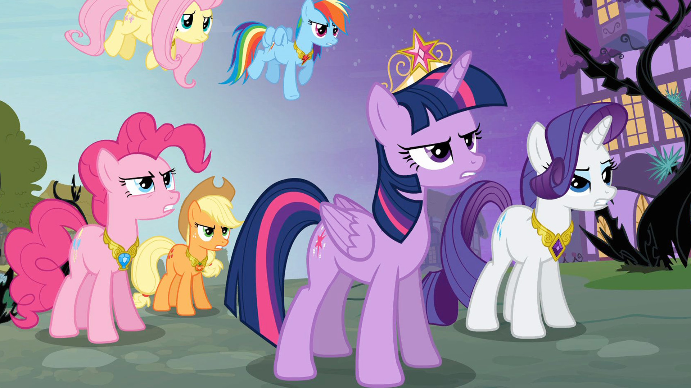

My little pony, ×2
Ah~🎶 ah~🎶 ah~🎶 ah~🎶
My little pony, I wondered what friendship was
(My little pony) Until their magic they wanted to give me
Adventure and fun, he is strong and faithful, with a big heart.
Being kind is the solution
Magic makes it even better
Because it's my little pony
And forever there will be a great friendship 🎶
 Entra a la wiki de My Little Pony